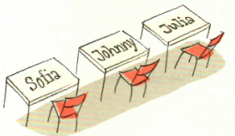
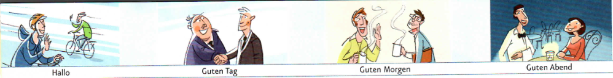
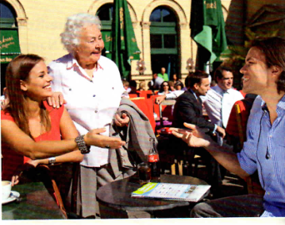
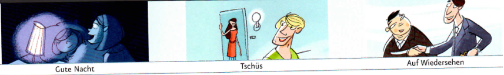
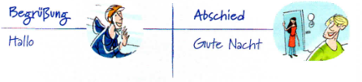

Mohamed Alhinawi
a Hören Sie und kreuzen Sie an.
b Kettenspiel: Sprechen Sie.
c Zeichnen Sie einen Sitzplan.
Notieren Sie die Namen.
Wer weiß die meisten Namen?


a Wer sagt was? Hören Sie das Gespräch weiter und ordnen Sie zu.
b Ergänzen Sie und vergleichen Sie mit a.
Hören Sie und ordnen Sie zu.
Hören Sie das Gespräch weiter und kreuzen Sie an.


a Was sagt Frau Wachter? Ergänzen Sie.
b Gespräche üben: du oder Sie?
Arbeiten Sie zu viert auf Seite 73.
| kommen | heißen | |
|---|---|---|
| du | kommst | heißt |
| Sie | kommen | heißen |
c Hören Sie noch einmal und ergänzen Sie.
| kommen | sein | |
|---|---|---|
| er/sie | kommt | ist |
d Bekannte Persönlichkeiten: Wer ist das? – Das ist ...
Arbeiten Sie auf Seite 75. Ihre Partnerin / Ihr Partner arbeitet auf Seite 77.
Sehr gut, danke! ☺☺
Gut, danke. ☺
Auch gut.
Es geht. ◕
Nicht so gut. ☹
Arbeiten Sie auf Seite 73. Aktionsseite ↗
a Hören Sie und sprechen Sie nach.
b Diktieren Sie Ihren Namen.
Hören Sie die Wendungen aus dem Bildlexikon und ordnen Sie zu.

| Verb: Konjugation | |||
|---|---|---|---|
| kommen | heißen | sein | |
| ich | komme | heiße | bin |
| du | kommst | heißt | bist |
| er/sie | kommt | heißt | ist |
| Sie | kommen | heißen | sind |
| W-Fragen: wer, woher | ||
|---|---|---|
| Position 2 | ||
| Wer | ist | das? |
| Wie | heißen | Sie? |
| Woher | kommst | du? |
| Aussage | ||
|---|---|---|
| Position 2 | ||
| Ich | heiße | Paco. |
| Ich | komme | aus Österreich. |
| Mein Name | ist | Valerie. |